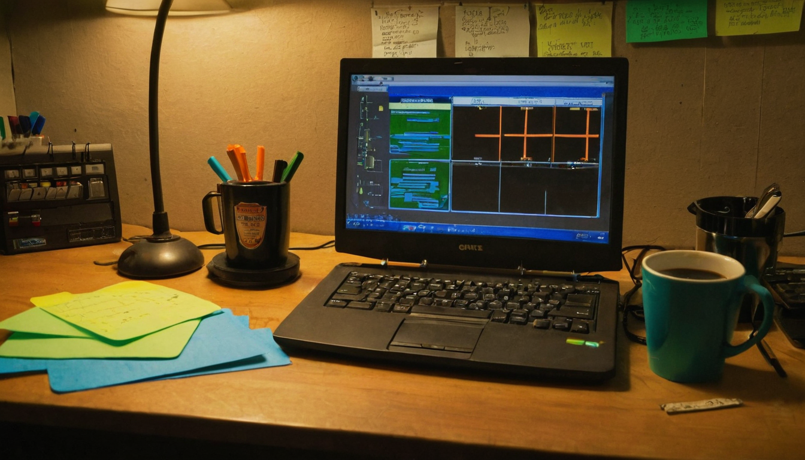
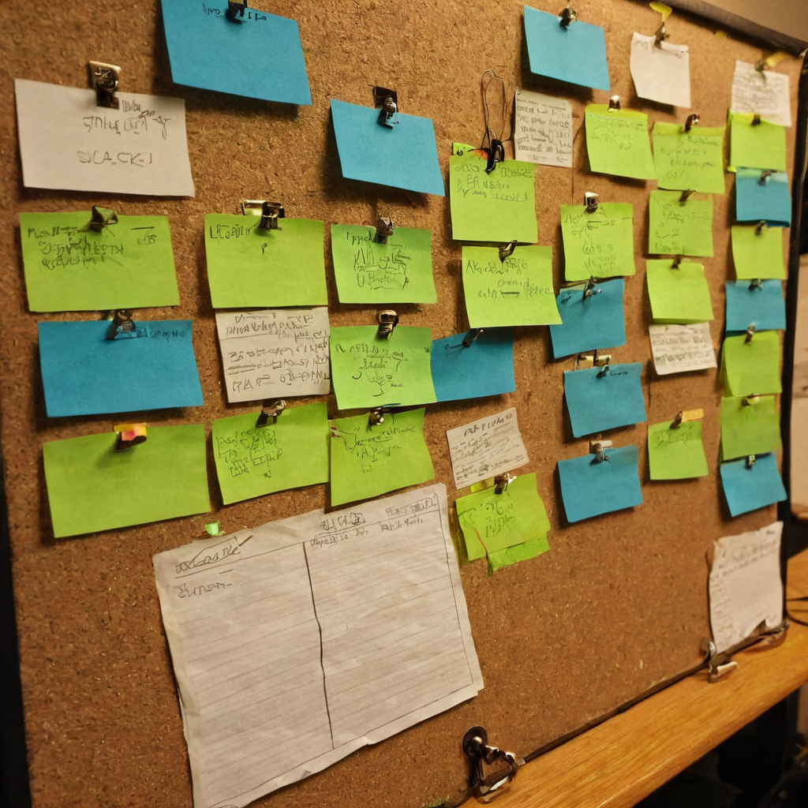

I stopped scrolling on this one because it made me laugh before I even understood what was happening, and that is usually a good sign something is working in a community.
@nftprofetmaster posted an "official" announcement for something called Mfers World Cup 2026, apparently a bracket-style contest running inside the Mfers on Chia community. The post opens with mock outrage: no prizes, both finalists disqualified because he personally does not like their national soccer teams, the whole thing declared over with no winner. Then the turn: just kidding, and congrats to the actual winner, @Enzinhomartini, with an image attached. No external links, no roadmap, no token talk. Just a bit, played out in real time for whoever was following the bracket.

It is easy to forget that a lot of what keeps an NFT community alive is not utility decks or partnership announcements. It is stuff like this: someone running a silly little tournament for fun, building tension around it, and then paying it off with a joke before naming the real winner. That is community management by instinct, not by playbook, and it is the kind of low-stakes engagement that keeps people showing up.
Mfers on Chia is a community project, and community projects live or die on whether people actually enjoy being there. A fake disqualification bit is a small thing, but it only works if people are paying attention and trust that it is going somewhere good. That trust is worth more than most metrics you could put on a dashboard.
What it does: Runs a lightweight, bracket-style community contest with a comedic reveal, which is a cheap and repeatable way to generate engagement without spending on prizes or infrastructure.
Who it helps: Any small project or community lead trying to keep members active between the bigger announcements. This is the connective tissue, not the headline.
Why builders should care: You do not need a budget or a dev team to run something like this. You need a format (a bracket, a vote, a matchup), a bit of showmanship, and a willingness to be a little silly in public.
What still needs work: There is no visible structure here, no bracket link, no explanation of how voting worked. That is fine for a one-off joke post, but if this becomes a recurring thing, some kind of simple public record would help newcomers understand what they are looking at.
What I would test first: If you run a small community, try a low-cost bracket contest with a joke ending like this one. Watch whether it gets people replying and tagging friends, that is the real signal, not the prize.
I like this because it is exactly the kind of thing that makes a community feel alive instead of managed. @nftprofetmaster clearly put some thought into the bit, building up fake stakes before landing on a genuine shoutout to @Enzinhomartini. That is a nice way to treat a winner, with a laugh on the way there instead of a dry announcement.
I do not know the full bracket or how many people were in it, and the post does not say, so I am just taking it at face value as a fun community moment. That is really all it needs to be.
I would keep an eye on whether this becomes a repeat event. A yearly (or seasonal) Mfers World Cup with a bit more visible structure could turn into a nice recurring tradition for the community, the kind of thing people start looking forward to. Worth watching how @nftprofetmaster and the community build on it, if at all.
Source: X post by @nftprofetmaster, https://x.com/i/web/status/2077507873786024157, retrieved 2026-07-15. No external references included in the post.